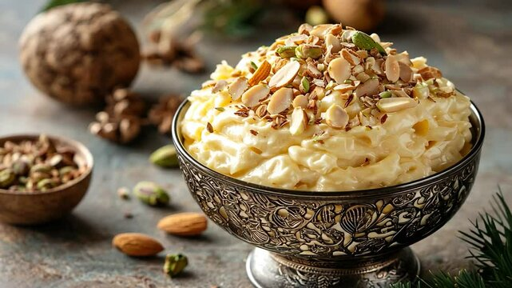

Shrikhand

Ingredients
- 500g thick yogurt (dahi)
- 3/4 cup powdered sugar
- 1/2 tsp cardamom powder
- Few saffron strands
- 2 tbsp warm milk
- Chopped nuts (almonds, pistachios) for garnish
- Rose petals for decoration (optional)
Step-by-Step Instructions
Step 1: Strain Yogurt
Take fresh thick yogurt. Place a muslin cloth over a bowl. Pour yogurt on the cloth. Tie the cloth and hang it for 3-4 hours or overnight in fridge. All water (whey) should drain out. You'll get thick hung curd.
Step 2: Soak Saffron
Soak saffron strands in warm milk for 10 minutes. They will release their color and aroma.
Step 3: Mix Everything
Take the hung curd in a bowl. Add powdered sugar and mix well with a spoon or hand blender till smooth and creamy. The sugar should dissolve completely.
Step 4: Add Flavors
Add cardamom powder and saffron milk. Mix well. The shrikhand should be smooth with no lumps. Taste and adjust sugar if needed.
Step 5: Chill
Refrigerate for at least 2 hours before serving. Shrikhand tastes best when cold.
Step 6: Serve
Garnish with chopped nuts and rose petals. Serve chilled in small bowls. Perfect dessert after a heavy meal!
Pro Tips
- Use fresh thick yogurt for best results
- Hang yogurt for at least 4 hours
- You can use ready-made chakka to save time
- Adjust sugar based on yogurt's sourness
- Don't skip saffron - it's the signature flavor
- You can add mango puree for aam shrikhand
- Stays fresh in fridge for 2-3 days
- Traditionally served with puri